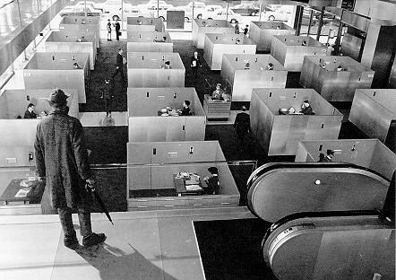

|

|
R.I.P. Cult (aka Boring Classic) Movie Night 1998-2000!
archival information follows
Cult Movie Night is the populist, sell-out successor to Boring
Classic Movie Night. Screening room’s the computer science
department classroom on the 3rd floor of 1890 Maple. The door locks
at 6:00; if you don’t have a keycard, arrive early, or E-mail me
that afternoon to let me know to come downstairs and let you in.
Movies are shown by video projection.
Upcoming movies
Announcements of upcoming movies are posted to the cs.general
newsgroup (accessible only through the Northwestern University news
server). Or, you can receive the announcements by E-mail by
subscribing to the film-folk mailing list. To subscribe, send
"subscribe film-folk" in E-mail to majordomo@cs.northwestern.edu.
To unsubscribe, substitute "unsubscribe" for "subscribe". If you have
any trouble subscribing or unsubscribing, contact me.
Past movies
Cult Movie Night:
4/19/00: Young Frankenstein (Mel Brooks)
4/5/00: This Gun For Hire (Frank Tuttle)
2/23/00: Performance (Nicolas Roeg/Donald Cammell)
2/9/00: Bride of Frankenstein (James Whale)
2/2/00: Mr. Hulot’s Holiday (Jacques Tati)
1/26/00: Pecker (John Waters)
8/30/99: Over the Edge (Jonathan Kaplan)
8/16/99: Car Wash (Michael Schultz)
8/2/99: Modern Romance (Albert Brooks)
6/2/99: The Holy Mountain (Alejandro Jodorowsky)
Boring Classic Movie Night:
3/11/99: Birth of a Nation (D.W. Griffith)
2/25/99: A Woman Under the Influence (John Cassavetes)
2/18/99: Casablanca (Michael Curtiz)
2/11/99: How Green Was My Valley (John Ford)
2/4/99: The Killing of a Chinese Bookie (John Cassavetes)
1/28/99: Metropolis (Fritz Lang)
1/21/99: White Heat (Raoul Walsh)
12/2/98: Ikiru (Akira Kurosawa)
11/4/98: The Gold Rush (Charlie Chaplin)
10/21/98: road trip to Northbrook Public Library for Macbeth (Orson Welles)
10/14/98: Hiroshima, Mon Amour (Alain Resnais)
10/7/98: The Navigator (plus shorts The Boat
and The Love Nest) (Buster Keaton)
9/30/98: Aguirre, the Wrath of God (Werner Herzog)
9/22/98: The Cabinet of Dr. Caligari (Robert Wiene)
9/15/98: Ugetsu (Kenji Mizoguchi)
9/8/98: Intolerance (D.W. Griffith)
9/1/98: Faces (John Cassavetes)
8/25/98: Tristana (Luis Bunuel)
8/18/98: Sunrise (F.W. Murnau)
8/12/98: The Third Man (Carol Reed)
8/5/98: The Stranger (Orson Welles)
7/27/98: Paris, Texas (Wim Wenders)
7/15/98: Battleship Potemkin (Sergei Eisenstein)
7/8/98: The Trial (Orson Welles)
7/1/98: (a documentary about Andrei Tarkovsky)
6/29/98: Andrei Rublev (Andrei Tarkovsky)
6/23/98: Ivan’s Childhood (Andrei Tarkovsky)
|